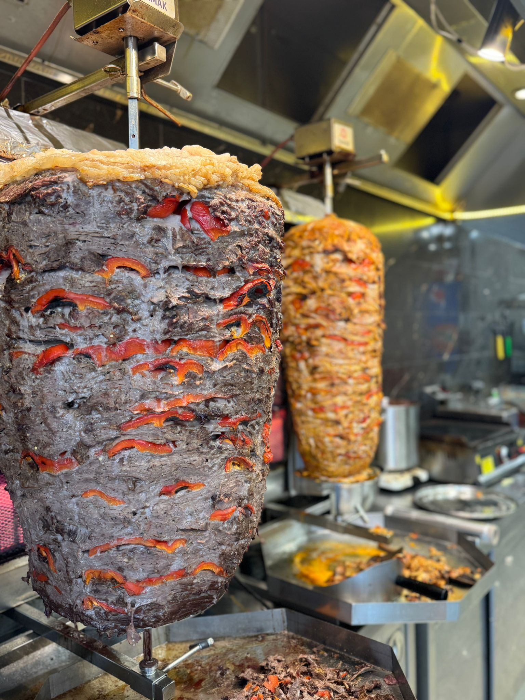
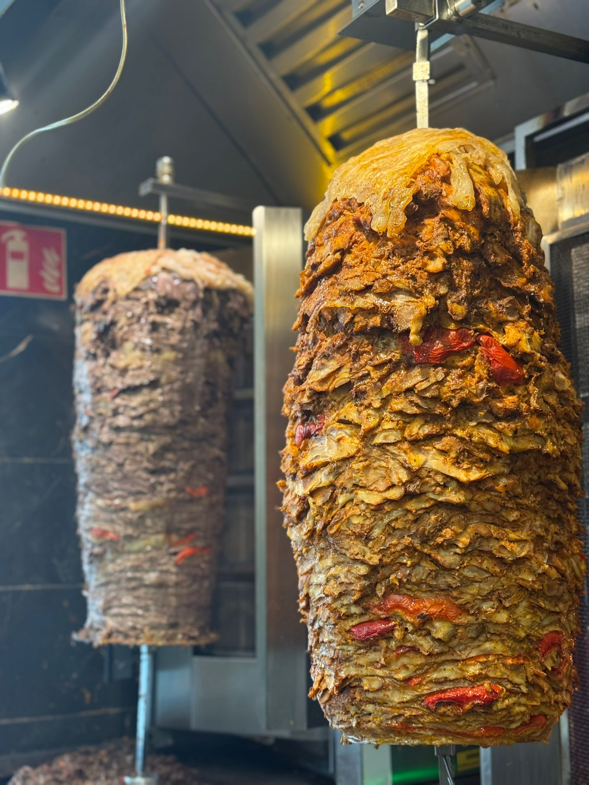
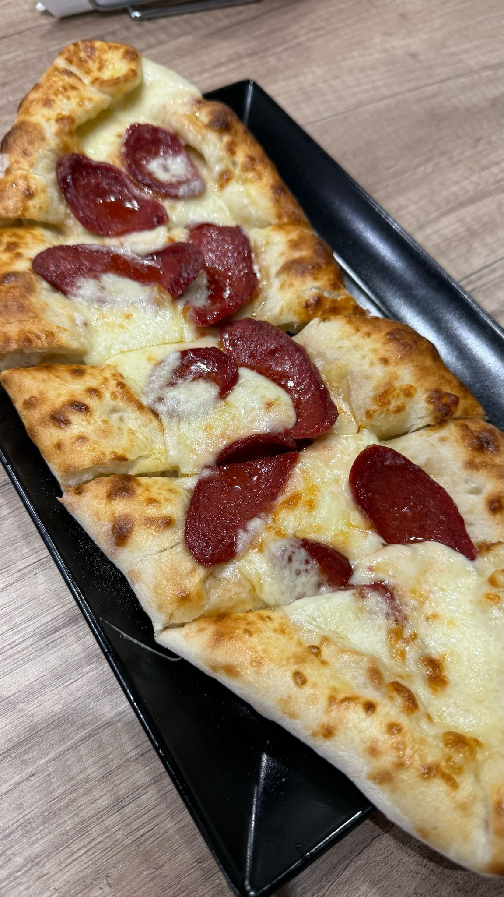
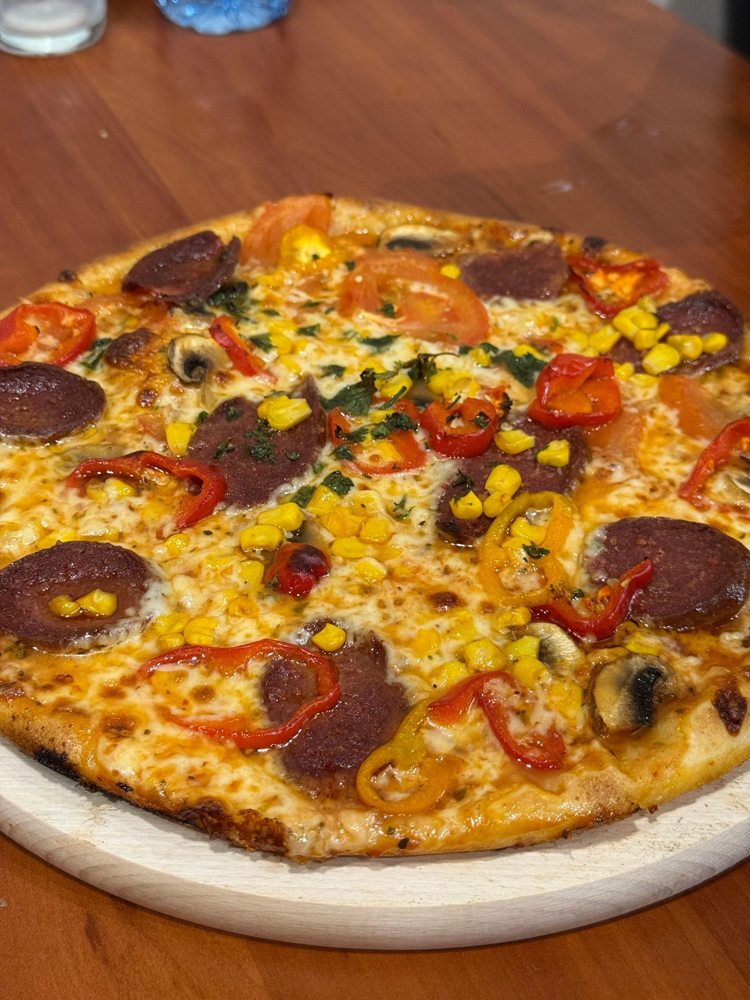
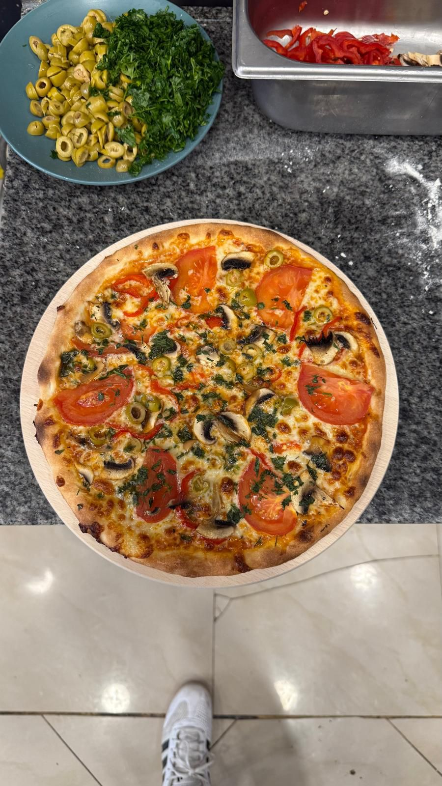
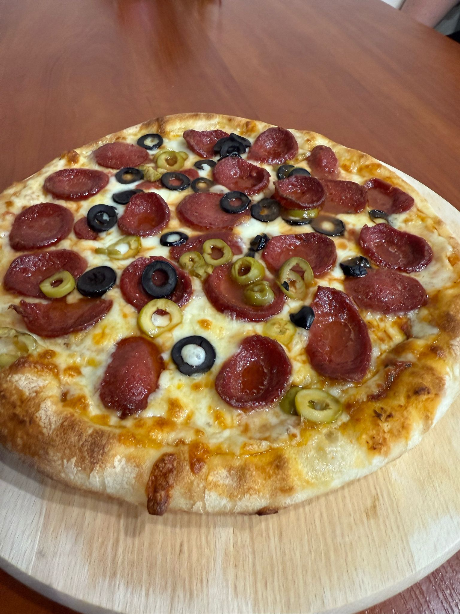

Gallery | Galeria








Fresh ingredients, authentic flavors and traditional recipes. Discover the true taste of Turkey in the heart of Poznan.
View MenuŚwieże składniki, autentyczne smaki i tradycyjna receptura. Odkryj prawdziwy smak Turcji w sercu Poznania.
Zobacz MenuTureckie Smaki is a family restaurant operating in Poznan for over 10 years. We specialize in authentic Turkish cuisine, preparing our dishes according to traditional recipes passed down from generation to generation.
We use only fresh, high-quality ingredients. Our meat is delivered daily from trusted local suppliers, and vegetables are always fresh and crispy. We make all our sauces ourselves according to our secret recipes.
Our mission is to provide our customers not only with delicious food, but also with a piece of Turkish culture and hospitality. Every guest is important to us and we try to make every visit unforgettable.
Fresh ingredients daily
Traditional recipes
Experienced chef team
Tureckie Smaki to rodzinna restauracja działająca w Poznaniu od ponad 10 lat. Specjalizujemy się w autentycznej kuchni tureckiej, przygotowując nasze dania według tradycyjnych receptur przekazywanych z pokolenia na pokolenie.
Używamy wyłącznie świeżnych składników wysokiej jakości. Nasze mięso dostarczane jest codziennie od zaufanych lokalnych dostawców, a warzywa są zawsze świeże i chrupiące. Wszystkie sosy robimy sami według naszych sekretnych przepisów.
Naszą misją jest dostarczanie naszym klientom nie tylko pysznego jedzenia, ale także kawałka tureckiej kultury i gościnności. Każdy gość jest dla nas ważny i staramy się, aby każda wizyta była niezapomniana.
Świeże składniki codziennie
Tradycyjne przepisy
Doświadczony zespół kucharzy
Święty Marcin 25
61-803 Poznań, Poland
+48 577 687 913
Mon-Thu: 11:00-23:00
Fri-Sat: 11:00-24:00
Sun: 12:00-22:00
GLOVO
Minimum order: 25 zł
We are located in central Poznan
on Święty Marcin street
Easy access:
🚌 Bus: lines 59, 174, 606
🚊 Tram: lines 1, 13, 5, 9
🅿️ Parking available nearby
Święty Marcin 25
61-803 Poznań
+48 577 687 913
Pn-Czw: 11:00-23:00
Pt-Sb: 11:00-24:00
Nd: 12:00-22:00
Uber Eats, Bolt Food
Minimum zamówienie: 25 zł
Jesteśmy w centrum Poznania
przy ulicy Święty Marcin
Łatwy dojazd:
🚌 Autobus: linie 59, 174, 606
🚊 Tramwaj: linie 13, 3, 5, 9
🅿️ Parking dostępny w pobliżu